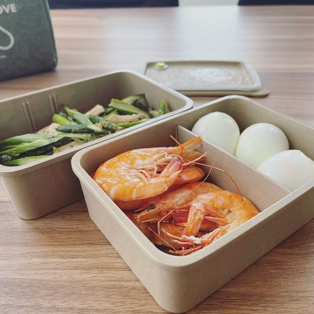
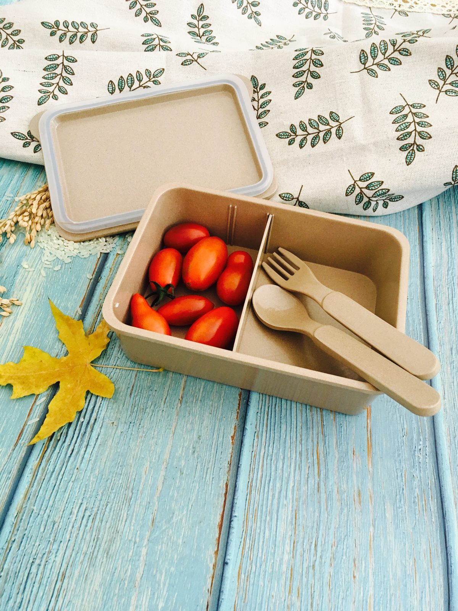
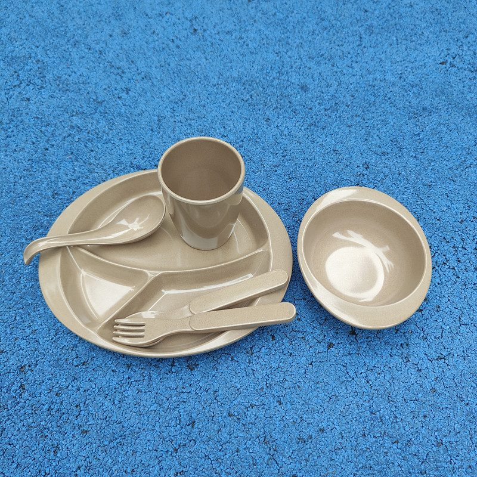

5 Reasons Food Businesses Are Switching to Rice Husk Tableware
From independent cafés to cloud-kitchen brands and private-label importers, a quiet shift is happening — on the shelf and in the back of house. Rice husk (plant-fiber) tableware is steadily replacing plastic and ceramic. If you run a food business, here are the five practical reasons your peers are making the switch, and what it means for your margin, your customers, and your brand.
Whether you run a neighborhood café, a catering operation, a meal-prep brand, or you import private-label products to resell, the same five forces are at work — and they compound as your volumes grow. The businesses seeing the biggest wins treat tableware as part of the brand, not just a cost line.

From takeaway counters to family tables — the same plant-fiber lunch box, different service styles.
1. Lower freight and breakage than ceramic, tougher than plastic
Ceramic looks premium but ships heavy, chips easily, and quietly costs you in replacements. Petroleum plastic is cheap but increasingly restricted and unpopular with customers. Rice husk tableware lands in the helpful middle: it is plant-based rather than fossil-fuel based, light to ship (lower freight per unit), and break-resistant enough to survive daily service. For takeaway, meal-prep and catering programs where breakage eats margin, that durability adds up fast. Our lunch boxes and compartment plates are built exactly for that repeat-use cycle. For multi-location operators, standardizing on one lightweight, break-resistant range also simplifies training and replenishment across every store.
2. Food-safe by design — BPA-free and plastic-free
Chemical safety is now a purchase criterion, not a nice-to-have. Our rice husk dinnerware is made from ground rice husk — a natural agricultural byproduct — blended with a small amount of food-grade starch binder, then molded under heat and pressure. The result contains no BPA and no petroleum plastic to shed into food. It is food-grade and microwave-safe for reheating (3–5 min, do not microwave empty). For businesses serving health-conscious customers, "BPA-free, plastic-free" is a claim you can actually stand behind. We go deeper on the health angle in our piece on why BPA-free tableware matters.
3. A sustainability story customers actually believe
"Eco" has been over-used, so shoppers are rightly skeptical — which is exactly why an honest, specific story wins. Rice husk tableware is biodegradable: at end of life it returns to nature through natural biological processes, far faster than plastic and without the same long-lived microplastic trail. We describe it as biodegradable, and we avoid stronger disposal claims we cannot back, because honesty builds the trust that turns into repeat orders. Pair the claim with the real caveats — conditions matter, and local waste facilities vary — and you have a brand story that survives scrutiny. Our honest answer on biodegradability lays out those limits plainly.
4. Built for daily service — reusable and break-resistant
A switch only works if the products hold up. Our tableware is made to be reused: dense, wood-like, and break-resistant through repeated daily use, which is why it suits busy counters and busy households alike. It is light for staff to handle and stacks efficiently for storage and delivery. Add your custom colors and logo and the same durable piece does double duty as silent brand advertising on every order. Browse the full collection — from coffee cups to serving trays — all produced in our 5,000 m² facility and shipped to 40+ countries.


5. Private-label ready — full OEM/ODM customization
This is the reason many importers and DTC brands choose us as their manufacturer. We run a 5,000 m² facility, ship to 40+ countries, and support complete OEM/ODM: your logo, your colors, your packaging. Whether you need a small pilot run or container-scale volume, we prepare samples and honest material specs up front so you can launch under your own brand with confidence. Most buyers start with a small pilot batch to validate quality and shelf appeal before scaling — we support low minimums for sampling and share honest material ratios up front, so there are no surprises at container scale. Tell us your target products and region and we will map a tailored quote. More on our setup is on the About Us page.
See How It's Made
A quick look at our production line — the same plant fiber that becomes your lunch boxes and plates:
Sourcing rice husk tableware for your food business?
Tell us your target products, quantities and region — we'll prepare a tailored quote, samples and honest material specs.
Send InquiryPublished by Kaixin Eco Team · Shenyang Kaixin Technology Co., Ltd. — eco-friendly rice husk (plant fiber) dinnerware manufacturer since 2016. New to the topic? Start with our complete buyer's guide, or compare materials in our rice husk vs bamboo vs plastic breakdown.